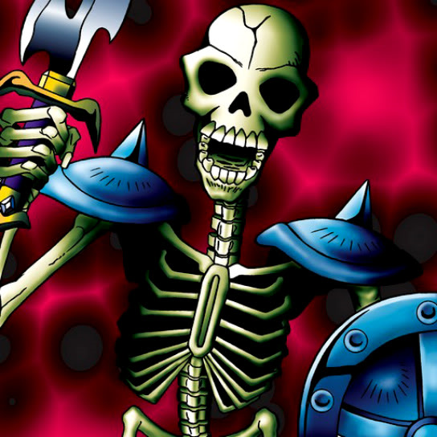

Zombie Warrior

STATS
ATK: 1200
DEF: 900DECK COST
Deck Cost per Card: 21Fusion List (23 Possible Fusions)
- Zombie Warrior + Abyss Flower = Pumpking the King of Ghosts
- Zombie Warrior + Arlownay = Pumpking the King of Ghosts
- Zombie Warrior + Armed Ninja = Armored Zombie
- Zombie Warrior + Barrel Lily = Pumpking the King of Ghosts
- Zombie Warrior + Celtic Guardian = Armored Zombie
- Zombie Warrior + Dark Plant = Pumpking the King of Ghosts
- Zombie Warrior + Doron = Armored Zombie
- Zombie Warrior + Dragon Zombie = Skelgon
- Zombie Warrior + Hurricail = Magical Ghost
- Zombie Warrior + Laughing Flower = Pumpking the King of Ghosts
- Zombie Warrior + M-Warrior #2 = Armored Zombie
- Zombie Warrior + Mammoth Graveyard = Great Mammoth of Goldfine
- Zombie Warrior + Man-Eating Plant = Pumpking the King of Ghosts
- Zombie Warrior + Man Eater = Pumpking the King of Ghosts
- Zombie Warrior + Masked Clown = Armored Zombie
- Zombie Warrior + Mystic Lamp = Magical Ghost
- Zombie Warrior + Mystical Elf = Magical Ghost
- Zombie Warrior + Nemuriko = Magical Ghost
- Zombie Warrior + One-Eyed Shield Dragon = Dragon Zombie
- Zombie Warrior + Right Leg of the Forbidden One = Magical Ghost
- Zombie Warrior + Swordsman from a Foreign Land = Armored Zombie
- Zombie Warrior + Time Wizard = Magical Ghost
- Zombie Warrior + Yamatano Dragon Scroll = Dragon Zombie